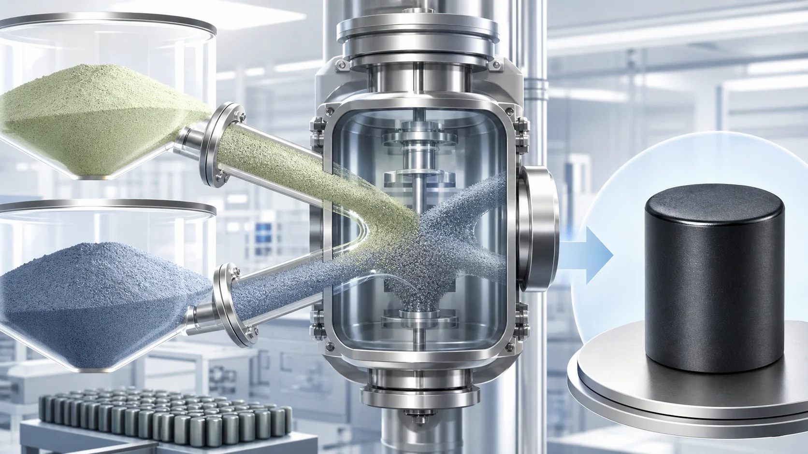
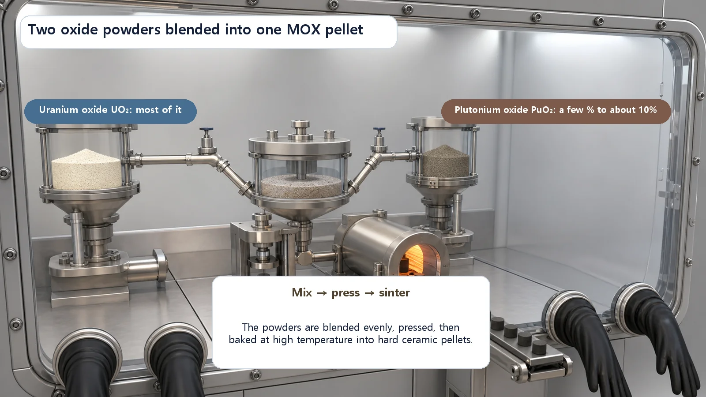
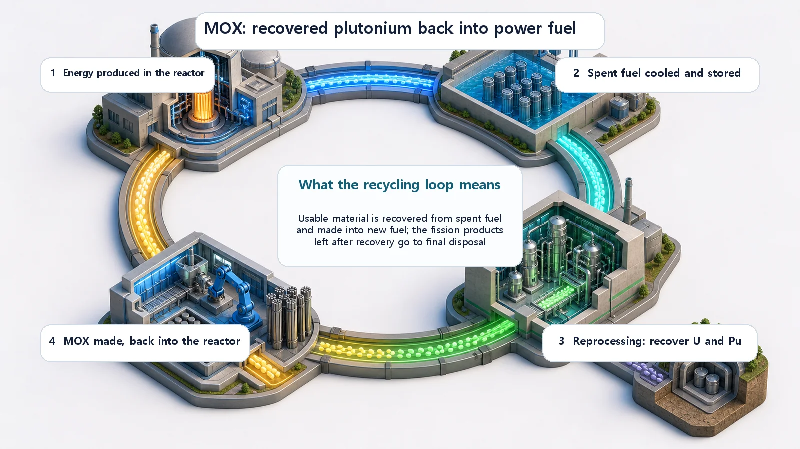

Long-Term Core Behavior & Fuel Cycle · 174
Burned-Out Ashes? There's Still Good Stuff Left — The Story of MOX Fuel
MOX blends plutonium recovered from spent fuel with uranium oxide, giving used fuel one more lap through the reactor.

MOX (mixed oxide) fuel is reactor fuel made by blending plutonium oxide into uranium oxide. The plutonium forms by itself in operating reactors as U-238 absorbs neutrons, and it is recovered by reprocessing spent fuel. Because plutonium gives off roughly one-third as many delayed neutrons as uranium, light water reactors usually load MOX into only part of the core, up to roughly one-third, while fast reactors use it as a standard fuel.
You open the fridge and see the leftovers from last weekend's cooking. At a glance you wonder whether it all has to go, but look closer and there are still perfectly good, even valuable, ingredients in there: a trimmed cut of meat, a few mushrooms you'd been saving. Too good to throw away. So you pick them out, mix them with fresh ingredients and put together one more meal. Nuclear energy has a story that looks just like this. Picking the "still-usable good stuff" out of fuel that has been used and removed, and bringing it back as new fuel: the result is today's star, MOX fuel.
What does MOX actually mean?
Let's start with the name. MOX stands for Mixed OXide. As the name says, it's fuel made by mixing two oxides. Which two? One is the familiar uranium oxide (UO₂); the other is plutonium oxide (PuO₂).
Ordinary nuclear power plant fuel is made of uranium oxide alone, with the share of the kind of uranium that fissions readily (U-235) raised slightly (enrichment). MOX adds plutonium. Instead of relying on uranium alone, it gives plutonium a share of the fission work too. The two powders are finely mixed in set proportions and pressed into a single pellet: a precise "blend," you could say.
Where does that plutonium come from?
The natural question follows. Uranium is mined, but plutonium barely exists in nature, so where does it come from? The answer is fun: it forms by itself inside the reactor.
While uranium burns and makes heat in the reactor, the majority uranium (U-238), which doesn't fission readily, quietly picks up a neutron on the side. Through a few steps, that uranium then turns into plutonium (Pu-239). So while we burn the fuel, new fissile material is gradually being made inside it. Shut down the reactor and pull out the used fuel, and inside you'll find this newborn plutonium plus uranium that hasn't been fully burned. That's why used fuel is not "completely burned-out ash" but "an ingredient with good stuff still in it."
Chemically picking the plutonium out of that leftover good stuff is called reprocessing. Mix the recovered plutonium oxide with uranium oxide that has had little or no enrichment and, voilà, MOX fuel. It follows exactly the same flow as picking the good leftovers out of the fridge (reprocessing), mixing them into a new batch (mixed) and serving another meal (MOX fuel).

How is it different from uranium fuel?
From the outside, a MOX pellet doesn't look much different from an ordinary fuel pellet: a jet-black ceramic pellet. But because a different lead actor is doing the work inside, its character differs in subtle ways.
The difference worth watching most is the "temperament" of the reaction. To control a reactor stably, neutrons that come out with a tiny delay after fission (delayed neutrons) play an important role: they buy operators "buffer time" to control the reaction. Plutonium gives off fewer of these delayed neutrons than uranium, roughly one-third as many. That means the buffer time is relatively tighter, so the more plutonium a core contains, the more carefully its reactivity control is designed and operated.
That's why light water reactors (the type that includes most of the nuclear plants in South Korea) don't fill the whole core with MOX; they usually load MOX into only part of the core, up to roughly one-third, and leave the rest as ordinary uranium fuel. In reactors that use fast neutrons (fast reactors), on the other hand, MOX is one of the standard fuels and a very good fit.
Neighbors that are easy to confuse
A few terms in this neighborhood sound similar or keep showing up together. Let's sort them out at once.
First, reprocessing and MOX are different. Reprocessing is the "process" that picks plutonium and uranium out of used fuel; MOX is the "finished fuel" made from what was picked out. Think of the difference between preparing ingredients (reprocessing) and the dish made from them (MOX).
Enriched uranium fuel and MOX also differ. Ordinary fuel uses only uranium and gets its power by raising the share of readily fissioning U-235 (enrichment). MOX barely enriches its uranium and lets plutonium take over the fission role instead. The dividing line is whether the power comes from uranium or from plutonium.
MOX and breeder reactors are terms on different levels. MOX is "a kind of fuel"; a breeder is "a kind of reactor." MOX can be used in light water reactors and in fast reactors alike, so the fuel name and the reactor name shouldn't be lumped together.
One last misconception. "Plutonium" easily brings something dangerous to mind, but the plutonium in spent reactor fuel is so-called reactor-grade material, a mixture of several isotopes, and it is managed for use as power-plant fuel. All of this material is subject to international accounting and inspections by the International Atomic Energy Agency (IAEA), so "where it is and how much there is" is always tracked. MOX is a fuel handled under international oversight, premised on peaceful use.
So why does it matter? Using fuel one more lap
The meaning of MOX in a phrase: "using fuel for one more lap."
Mining uranium, using it once and disposing of it is like a straight one-way road: there's a start and an end. Recovering the still-usable plutonium and uranium from used fuel and making it into fuel again turns that road into a loop, like the arrows chasing each other on a recycling symbol. MOX is the link that closes that loop.
Two things follow. First, since more energy is drawn from resources already mined, some of the uranium that would otherwise need to be newly mined and enriched can be saved. Second, by consuming the plutonium separated in reprocessing as fuel, accumulated plutonium stocks can be drawn down. Of course, reprocessing and MOX fabrication require cost and careful management, and countries judge differently whether to take this road. In practice, some countries run this recycling route commercially, while others choose the straight route of using fuel once and disposing of it. MOX is the fuel you meet at the end of the "recycling road" when that road is chosen.

Today's takeaways
- MOX fuel stands for Mixed OXide: nuclear fuel made by mixing plutonium oxide into uranium oxide.
- The plutonium forms by itself during reactor operation when uranium (U-238) absorbs neutrons, and it is recovered by reprocessing used fuel. Used fuel is not "burned-out ash" but "an ingredient with good stuff left."
- Plutonium leaves less reaction buffer time (fewer delayed neutrons) than uranium, so light water reactors usually load MOX into only part of the core (up to roughly one-third), while fast reactors use it as a standard fuel.
- It sits on a different level from reprocessing (a process), enriched uranium fuel (uranium only) and breeder reactors (a reactor type), and the materials involved are managed peacefully under IAEA accounting.
- The key idea is "using fuel for one more lap": MOX is the link that turns a straight fuel cycle into a loop.
The fuel we thought was used up actually held good stuff that can be used again, and there's a way to pick it out and bring it back as new fuel. The single term MOX fuel carries a fairly big question: how should we look at our resources?